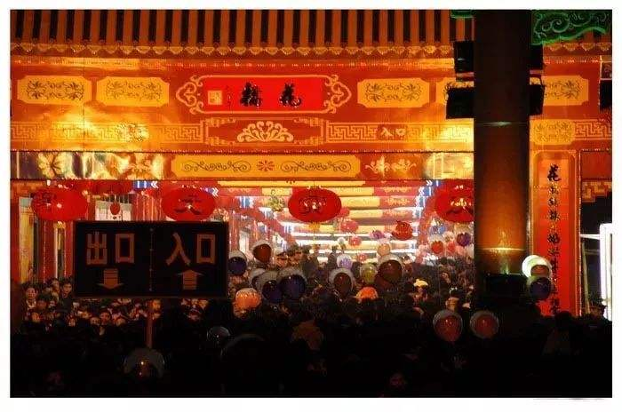

吴川市简介
吴川，广东省辖县级市，由湛江市代管，位于广东省西南部，东邻茂名市电白区，南濒南海，西接廉江市，西南连湛江市坡头区，北与化州市、茂名市茂南区接壤，区域总面积858.1平方公里。截至2019年，吴川市共辖5个街道、10个镇，根据第七次人口普查数据，截至2020年11月1日零时，吴川常住人口为907354人。
一、吴川特色文化
吴川市梅菉镇2000年被文化部命名为“中国民间艺术之乡”，黄坡镇2005年被文化部命名为“中国民间文化艺术之乡”，吴阳镇2005年被文化部命名为“中国历史文化名镇”，2008年该市被广东省授予“诗词之乡”，还被世人们誉为“粤剧之乡”、“泥塑之乡”、“木偶之乡”。 吴川市的飘色、泥塑、花桥被誉为“吴川三绝”，吴川泥塑2007年入选“广东省非物质文化遗产名录”，吴川飘色2008年入选“国家非物质文化遗产名录”。
吴川飘色
2000年,正式入选"第二批国家级非物质文化遗产名录",发掘、保护这一民间艺术,继承和弘扬传统文化,对建设社会主义精神文明将起到积极的作用。探索性地用工笔人物画的绘画方式来表现和记录吴川飘色这一非物质文化遗产,对于吴川飘色的实践记录和历史性研究,具有重要的意义,同时吴川飘色艺术为中国工笔人物画艺术的创作提供的民俗性素材,具有开创性意义。
吴川泥塑
吴川泥塑又称泥公仔，是中国一种古老和传统的民间艺术。源于唐末宋初，由梅菉镇瓦窑村民兴起。唐代时，佛山廖岭居民迁移至此，从此，佛山石湾的陶瓷工艺传入吴川。
吴川花桥
每逢农历正月十五晚，踏着夜色，游人倾城而出，拥向花桥。花桥是由吴川市梅录镇上隔海村群众装饰的。他们把梅江上一座桥梁点缀得花团锦簇，灯火辉煌，桥头龙飞凤舞，逼真动人，即增添节日气氛，也表达了劳动人民对美好生活的祈求。
二、吴川特色美食
吴川月饼
吴川月饼，广东省吴川市特产，中国国家地理标志产品。从1千克至7.5千克不等，其用料考究、制作严谨、工艺精细，皮薄馅厚，香酥爽口，甜度适中，风味纯正，而且造型美观、色泽金黄、图案精致、花纹玲珑浮凸、饼皮柔软、色香味俱全。有伍仁、豆沙、莲蓉、冰皮月饼、水果月饼、海味月饼、无糖月饼等40个品种。
吴川田艾籺
田艾米籺，因其工艺繁复，口感绵逸，又承载着传统习俗，而深受欢迎。田艾米籺是广东粤西地区常见的食品，当地一般逢年过节家家户户都会做田艾米籺。在开春时节，万物复苏，草长莺飞，正是春耕的田野上田艾生长的全盛时期，田艾约10厘米高，叶子是粉绿色的，花朵白中间绿，全身长满绒毛；田艾具有祛湿，暖胃，清肠等功效。

吴川粉皮是粤西地区特有的一种小吃。类似其他大米为原料磨浆制成的食品，如广州的沙河粉、肇庆的肠粉、广西的桂林米粉。吴川粉皮皮薄，韧而爽滑。因此，它的吃法多种多样：可捞，可汤煮，可炒。
三、吴川特色景点
林召棠状元坊
吴川状元坊，原来是清代状元林召棠的故里。林召棠是广东的三个状元之一。也许是“名人效应”的缘故，180年来，当地人都把林召棠作为人文文化的“根”保全下来了。
吴阳金海岸
吴阳金海岸旅游度假区，位于吴川市吴阳镇区东南1公里的滨海地带，距离吴川市区15公里，总面积12平方公里。南北18公里长的海岸线，造就了美丽的自然景观，4平方公里的沙滩，沙质细软，海面宽阔，有中国芭堤雅之称。
张炎故居
张炎故居在吴川市塘缀镇樟山村。张炎（1902～1945年），字光中，吴川市人，原任国民革命军第十九路军师长，参加“淞沪抗战”，1939年任广东省第十一战区统率委员会主任，组织十九路军旧部与中共南路地方组织合作抗日，1945年1月13日举行抗日武装起义，成立高雷民众抗日军，任军长。